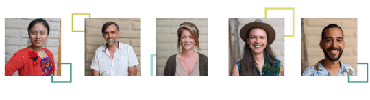

<div class="row">
<div class="col">  
	<div class="oe-editable" 
		id="edit-$postdata.id" 
		data-dataid="$postdata.id" 
		data-field="maincontent"   	
		data-searchtype="postdata" 
		data-viewtype="html">
		
<div class="about-main">
<div class="container">
	<div class="about-header" style="min-height: 260px;font-size:36px;font-style:italic;padding-top:35px;">

	<div class="row">
	<div class="col-lg-3">

	</div>
	<div class="col-lg-9">
			"A worldwide financial platform for social change"
	</div>
	</div>
		
	</div>

	<div class="about-team"></div>

	<div class="about-highlight">
		<h3>Sponsor Us</h3>
		
		<div class="about-highlight-t1"></div>
		
		<div class="about-highlight-t2" style="max-width:190px;margin:0 auto;">
		 The OI platform is supported by a collaboration of philantropist, world travelers,
			cultural ambassadors,
			tech-industry veterans and
			open-source enthusiasts making an impact
		
		
		</div>
		
		<div class="about-donate-btn"><a href="https://openinstitute.org/app/collective/donate/AW_EEOogCrPBxPh_P9NA/donate.html"></a>
		</div>
	</div>
</div>
</div>


<!--<div class="clearfix">&nbsp;</div> -->

<div class="container">
	<div class="secondary-main">
	<h2>Created over five years, and counting...</h2>
	
	<div class="about-box about-platform">
	<div class="about-box-header">
	<h3>Philosophy</h3>
	</div>
	
	<div class="about-box-content">
	<div class="row">
	<div class="col-lg-8">

		<p>OI supports the new collaborative economic model for a digital age. 
		The collaborative economic model is an online exchange where sponsors can monitor the ongoing social and ecological impact of their donations.</p>

		<p>Projects hosted on OI use <strong>accountability</strong> and <strong>transparency</strong> to provide measurable verifiable outcomes for donations received. 
		</p> 
		
		<p>We are dedicated to affordability for everyone, OI is <strong>100% free</strong>. 
		All OI operational software and expenses are funded by sponsors and donations like yours.
		</p> 
	</div> 
	
	<div class="col-lg-4" style="">
	
	<b>&nbsp;&nbsp;&nbsp;We Value:</b>
	<ul>
	<li>Meaningful Work
	</li>
	<li>
		Accesability for all
	</li>
	<li>
		Open Technology
	</li>
	<li>
		Censorship Free
	</li>
	<li>
		Accountability
	</li>
	<li>
		Supporting the Arts
	</li>
	<li>
		Cultural Diversity
	</li>
	<li>
		Local Autonomy
	</li>
	</ul>	
	
	</div>
	</div>
	</div>
	
	<div class="about-box about-features">
	<div class="about-box-header">
	<h3>Features</h3>
	</div>
	
	<div class="about-box-content">
	<div class="row">
	<div class="col-lg-4"><h3>Fundraising </h3> 
	<br>
	<p>OI is a US Registered 501c Non-Profit. Any donations made to OI itself is tax-excemt and tax-deductible. </p>
	<p>
		Financial Accountability: Sponsors and project owners can track their own donations and finances online with full transparency including: Expense, Income, Investment and Donation tracking. 
	</p>
	<p>
		Support payments in multiple currencies by Credit Cards, Paypal, Cash or block chain payments. 
	</p>
</div>
	
	<div class="col-lg-4"><h3>Collaboration</h3>
	<br>
	<p>OI Chat as an Open source replacement WhatsApp and Messenger. Allows teams to be quickly formed on each Project
	<p>Available as mobile Android and MacOS Apps. <p>
	<p>Built in todo tracking with Work Points tracking to fairly compensate your team.</p> 
	<p>Free of corporate influence or censorship</p>
</div>
	
	<div class="col-lg-4"><h3>Promotion</h3>
		<br>
		<p>Post photos, or videos of your project progress. Share to other social media platforms</p>
		<p>Marketing of your progress and be part of OI campaigns to collaborate with other like minded projects</p>
		<p>Connect with partners and voluntears</p>
		<p>Search Engine Optimized content allows Google to find your project and rank your pages higher</p>
	</div>
	</div>
	</div>
	</div>
	
	<div class="about-box about-testimonials">
	<div class="about-box-header">
	<h3>Testimonials</h3>
	</div>
	
	<div class="about-box-content">
	<div class="row">
	<div class="col-lg-6">
	<p style="text-align: center;">Open Institute, testimonial 1</p>
	
	<p style="text-align: center;">-Fe Restuarant</p>
	</div>
	
	<div class="col-lg-6">
	<p style="text-align: center;">Open Institute, testimonial 1</p>
	
	<p style="text-align: center;">-Alejandro</p>
	</div>
	</div>
	
	<table border="0" style="width:90%; margin:0 auto;">
	</table>
	</div>
	</div>
	</div>
</div>


  </div>
</div>
</div>
